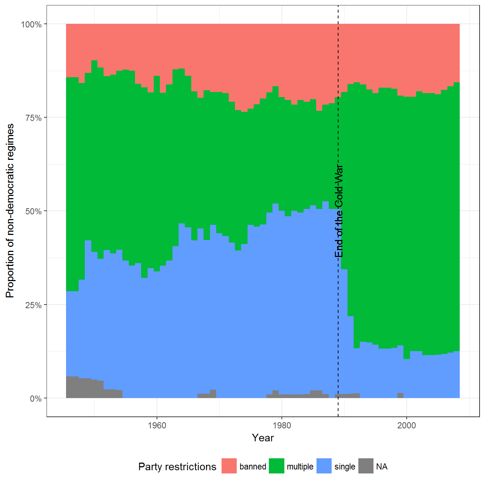
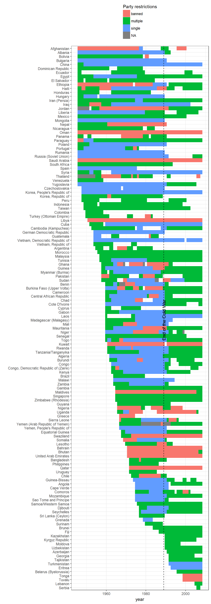
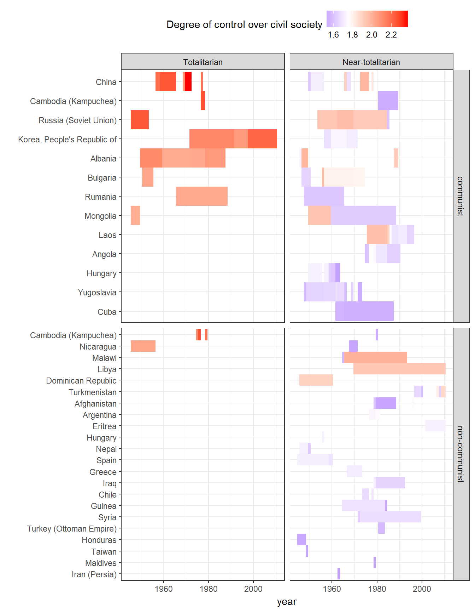
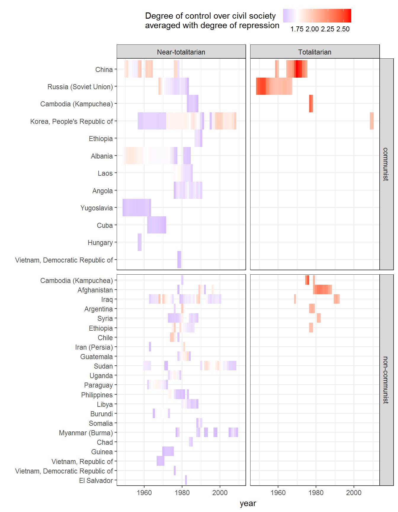

This vignette shows how to replicate and extend the charts in chapter 3 of my book Non-democratic Politics: Authoritarianism, Dictatorships, and Democratization (Palgrave Macmillan, 2016). It assumes that you have downloaded the replication package as follows:
if(!require(devtools)) {
install.packages("devtools")
}
devtools::install_github('xmarquez/AuthoritarianismBook')It also assumes you have the dplyr, ggplot2, scales, forcats, and knitr packages installed:
if(!require(dplyr)) {
install.packages("dplyr")
}
if(!require(ggplot2)) {
install.packages("ggplot2")
}
if(!require(scales)) {
install.packages("forcats")
}
if(!require(forcats)) {
install.packages("scales")
}
if(!require(knitr)) {
install.packages("knitr")
}This figure shows restrictions on party competition in non-democratic regimes in the post-WWII era. Excludes countries with fewer than 500,000 people). Data from (Svolik 2012). Svolik counts “united fronts” as single parties when the parties involved are not genuinely independent, as in China and the GDR, where ruling communist parties supposedly rule (or ruled, in the case of the GDR) in a “united front” with other parties.
library(AuthoritarianismBook)
library(dplyr)
library(ggplot2)
data <- svolik_institutions
ggplot(data = data, aes(x = year, fill = party)) +
geom_bar(position = "fill", width = 1) +
theme_bw() +
labs(fill = "Party restrictions",
x = "Year",
y = "Proportion of non-democratic regimes") +
guides(color = guide_legend(title.position="top")) +
theme(legend.position = "bottom") +
geom_vline(xintercept = 1989, linetype = 2) +
scale_y_continuous(label=scales::percent) +
annotate("text",
x = 1989,
y = 0.5,
label = "End of the Cold War", angle=90)
We can also see the data per country:
ggplot(data = data,
aes(x = forcats::fct_rev(reorder(as.factor(country_name),
year,
FUN = min)),
y = year)) +
geom_tile(data = data,
aes(fill = party)) +
theme_bw() +
coord_flip() +
labs(x = "", fill = "Party restrictions") +
theme(legend.position = "top") +
guides(fill = guide_legend(ncol = 1, title.position="top")) +
geom_hline(yintercept = 1989, linetype = 2) +
annotate("text",
y = 1989,
x = length(unique(data$country_name))/2,
label = "End of the Cold War", angle=90)
Though the chapter does not use a measure of totalitarianism, it is possible to construct one using the civil society measure (v2xcs_ccsi) from V-Dem (Coppedge Michael et al. 2016; Bernhard et al. 2015) discussed in the vignette for chapter 1:
civil_society <- vdem %>%
select(country_name, GWn, year,
in_system, v2xcs_ccsi,
v2xcs_ccsi_codelow, v2xcs_ccsi_codehigh) %>%
mutate(civil_society = qnorm(1 - v2xcs_ccsi),
civil_society_high = qnorm(1 - v2xcs_ccsi_codelow),
civil_society_low = qnorm(1 - v2xcs_ccsi_codehigh))Countries that are at least two standard deviations away from the mean in this measure can be considered totalitarian, and countries that are 1.5 standard deviations away may be close to totalitarian. Here are they:
data <- civil_society %>%
filter(in_system, civil_society >= 1.5) %>%
inner_join(kailitz_yearly) %>%
mutate(totalitarian = forcats::fct_rev(factor((civil_society >= 2),
labels = c("Near-totalitarian","Totalitarian"))),
communist = ifelse(communist, "communist", "non-communist"))## Joining, by = c("country_name", "GWn", "year", "in_system")ggplot(data = data,
aes(x = forcats::fct_rev(reorder(as.factor(country_name),
-civil_society,
FUN = min)),
y = year)) +
geom_tile(aes(fill = civil_society)) +
theme_bw() +
scale_fill_gradient2(low = "blue", high = "red", midpoint = 1.75) +
coord_flip() +
labs(x = "",
fill = "Degree of control over civil society") +
theme(legend.position = "top") +
guides(color = guide_legend(ncol = 1, title.position="top"),
size = guide_legend(ncol = 1, title.position="top")) +
facet_grid(communist ~ totalitarian, scales = "free_y")
This measure may be averaged with Fariss’ measure of repression (Fariss 2014) for a different look:
data <- inner_join(civil_society, fariss %>%
select(country_name, year, GWn, latentmean)) %>%
inner_join(kailitz_yearly %>%
select(country_name, year, GWn, communist)) %>%
mutate(totalitarian_score = (civil_society - latentmean)/2,
totalitarian = factor(totalitarian_score >= 2,
labels = c("Near-totalitarian", "Totalitarian")),
communist = ifelse(communist, "communist", "non-communist"))## Joining, by = c("country_name", "GWn", "year")
## Joining, by = c("country_name", "GWn", "year")ggplot(data = data %>% filter(totalitarian_score >= 1.5),
aes(x = forcats::fct_rev(reorder(as.factor(country_name),
-totalitarian_score,
FUN = min)),
y = year)) +
geom_tile(aes(fill = totalitarian_score)) +
theme_bw() +
scale_fill_gradient2(low = "blue", high = "red", midpoint = 1.75) +
coord_flip() +
labs(x = "",
fill = "Degree of control over civil society\naveraged with degree of repression") +
theme(legend.position = "top") +
guides(color = guide_legend(ncol = 1, title.position="top"),
size = guide_legend(ncol = 1, title.position="top")) +
facet_grid(communist ~ totalitarian, scales = "free_y")
Bernhard, Michael, Eitan Tzelgov, Dong-Joon Jung, Michael Coppedge, and Staffan I. Lindberg. 2015. “The Varieties of Democracy Core Civil Society Index.” 13. V-Dem Institute.
Coppedge, Michael, John Gerring, Staffan I. Lindberg, Svend-Erik Skaaning, Jan Teorell, David Altman, Michael Bernhard, et al. 2016. “V-Dem [Country-Year/Country-Date] Dataset, Version 6.1.” Dataset. Varieties of Democracy (V-Dem) Project. https://www.v-dem.net/en/data/data-version-6-1/.
Fariss, Christopher J. 2014. “Respect for Human Rights Has Improved over Time: Modeling the Changing Standard of Accountability.” American Political Science Review 108 (02): 297–318. doi:doi:10.1017/S0003055414000070.
Svolik, Milan. 2012. The Politics of Authoritarian Rule. Book. Cambridge: Cambridge University Press.